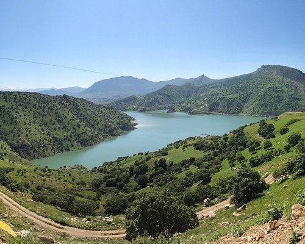
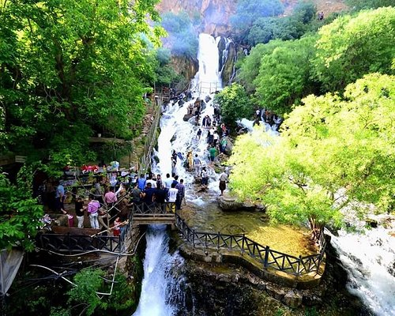
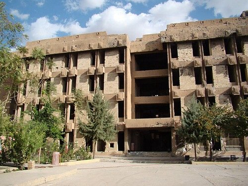
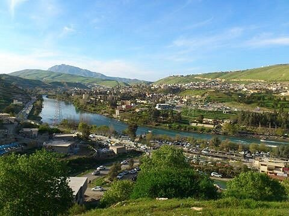

Darbandikhan Lake is 60 km southeast of Sleimani City. The lakeshore and riverside areas are a stunning natural site. Many people come from the south of Iraq to enjoy the scenery and the fresh air. Tourist facilities are also built in the area for tourist services.
Zalm waterfall in Ahmed Awa is one of the Kurdistan Region's most famous tourist destinations, which is located 21 km northeast of the province of Halabja
From 1979 to 1991, during Saddam Hussein's rule in Iraq, Amna Suraka was the northern headquarters of the Da'irat al-Amn/Directorate of General Security, the Iraqi Interior Ministry's intelligence agency, colloquially referred to as just Amn. Many people were imprisoned there, especially students, Kurdish nationalists, and other dissidents. Many were tortured and raped. During the 1991 Battle of Sulaymaniah Iraqi security officials and soldiers retreated to the Amn headquarters which served as the Baathist stronghold in the city and held off rebels for nearly two days until the prison was captured by Peshmerga forces, following a 2 hour long assault. Rebels summarily executed 300 Amn agents, with angry civilians killing many others. One group of mothers whose sons had been killed at the compound stoned and axed to death 21 Iraqis. In total, between 700 and 800 secret policemen and soldiers were killed, although many conscripts were pardoned and allowed to return to their homes in the south by KDP chief Massoud Barzani. The building has many bullet marks from that battle.
Lake Dukan is a lake in Kurdistan Region Iraq. It is located close to the city of Ranya, and is a reservoir on the Little Zab created by the construction of the Dukan Dam. The Dukan Dam was built between 1954 and 1959 as a multi-purpose dam to provide water storage, irrigation and hydroelectricity.[1] Prior to the flooding of Lake Dukan, the area has been subjected to archaeological research to investigate as many archaeological sites as possible. An archaeological survey in the Ranya Plain documented some 40 archaeological sites with evidence for occupation ranging from the sixth millennium BCE up to the present.
